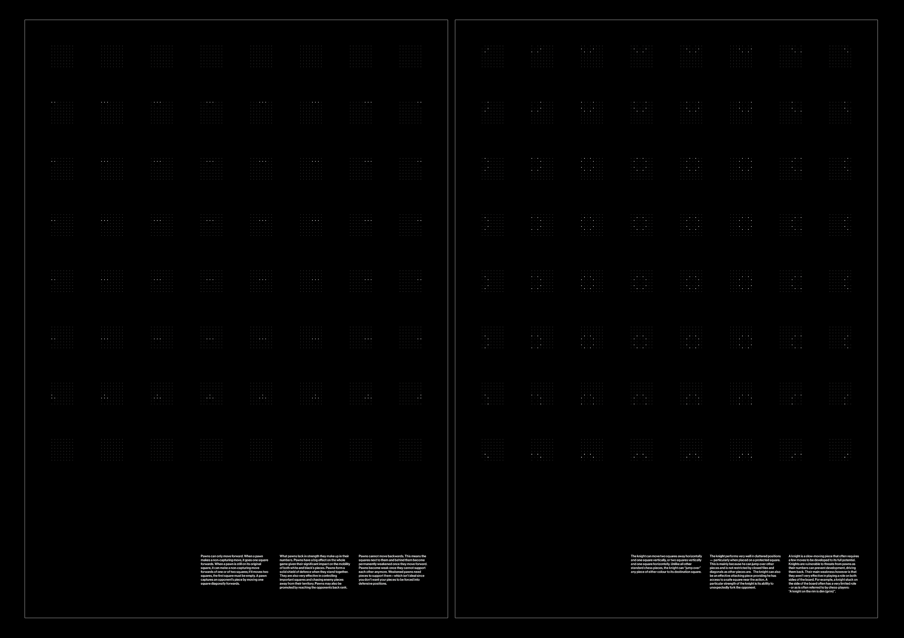
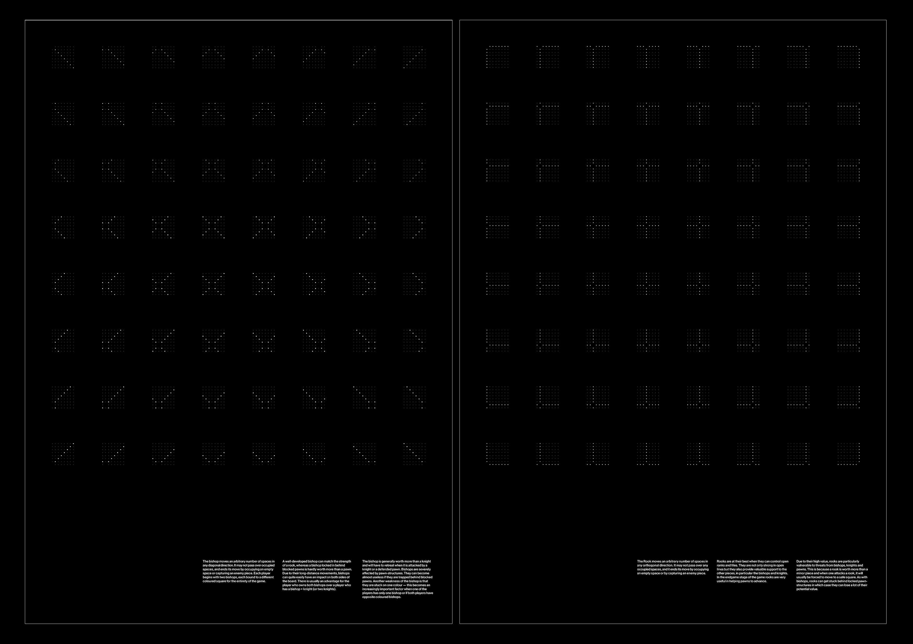
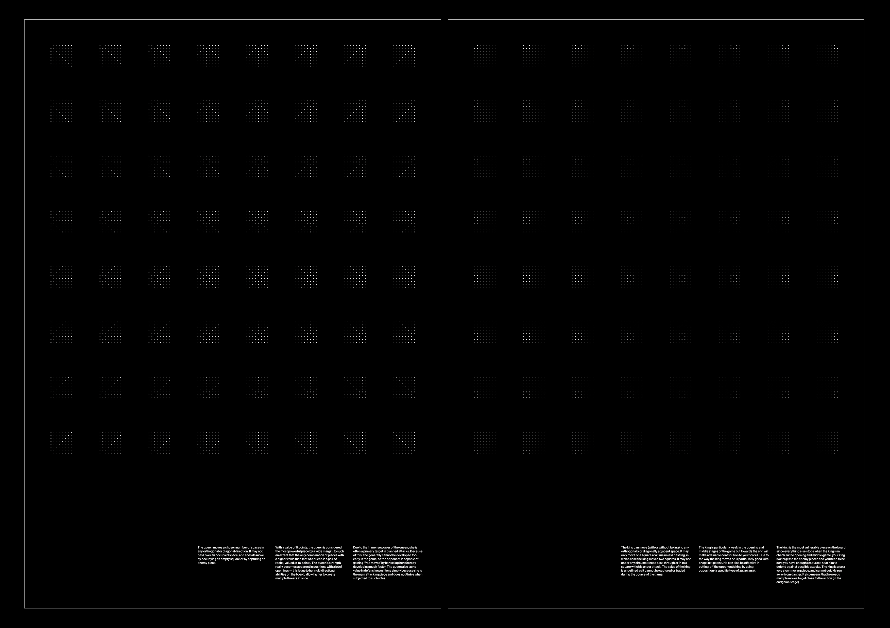

← Return
Visualising Chess Moves
In a series of 6 A1 posters, I visualised every potential movement that could be made from every legal position for a given chess piece; arranging 64 8x8 diagrams (one for each square) in an 8x8 grid as to reflect the layout of the board.


